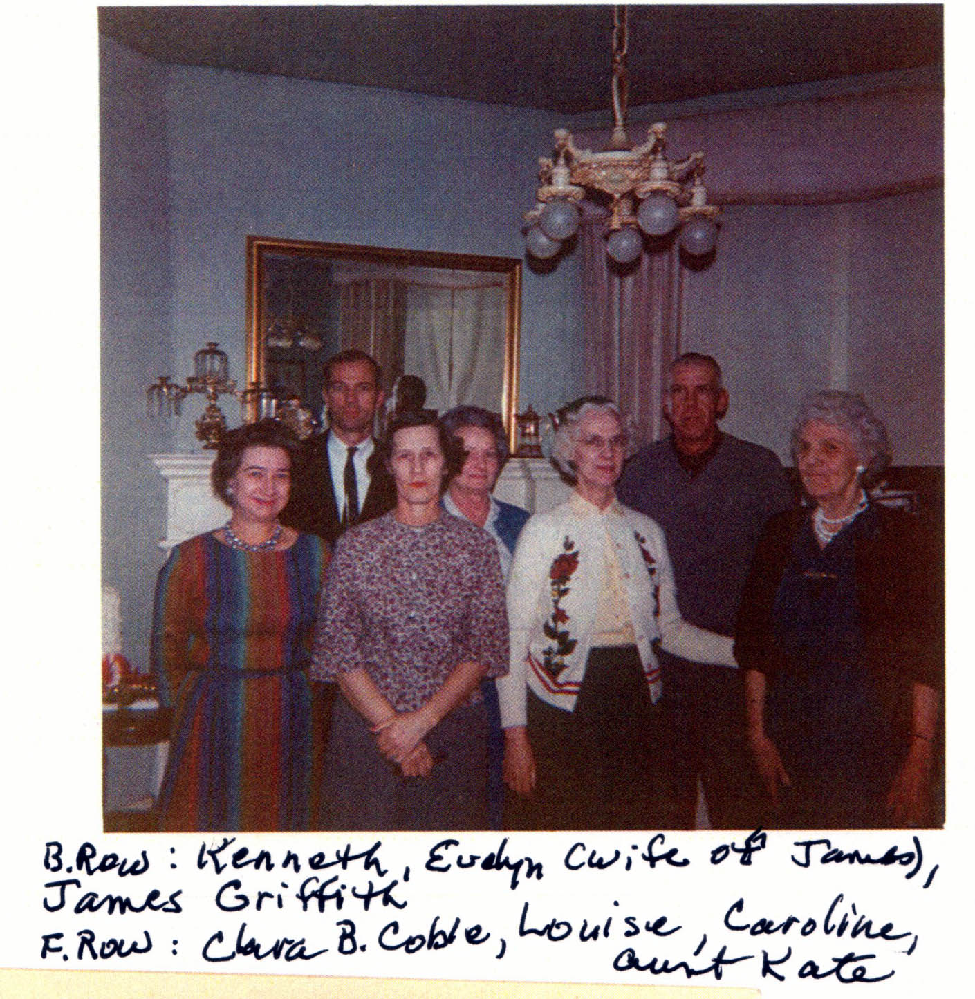

Here's a photograph taken ca. 1962 of the Griffith family with some Coble relatives. Back row, left to right: Kenneth Rudge Wilson Jones, Evelyn nee Snyder Griffith, James T. Griffith Jr.; Front row, left to right: Clara nee Bivens Coble, Louise nee Coble Bareford, Caroline nee Coble Jones, Kate nee Rudge Griffith.